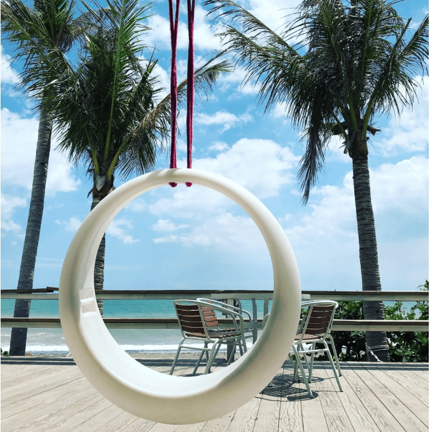

愛情海景觀餐廳

是一間位在靠海的景觀餐廳，整間餐廳以白色的希臘風格打造，是一間相當不錯的景觀餐廳，是網美超愛的聖地喔！

是一間位在靠海的景觀餐廳，整間餐廳以白色的希臘風格打造，是一間相當不錯的景觀餐廳，是網美超愛的聖地喔！
距離屏東大學林森校區步行距離約3分鐘，挺受到大學生們的歡迎 早午餐/下午茶咖啡/晚餐都有得吃 餐點價位約100～200左右，份量足夠且豐富(蔬菜滿滿) 特別推薦有肉的餐XD
目前已重新營運，菜單已改過，跟我先前吃的已經不同哩～ 店內布置挺特別的，餐點也還不賴 從用餐客人即能明顯看出頗受年輕族群的喜愛
學生也能負擔得起的平價壽司店 食材新鮮、美味，服務也很棒 屏東許多知名人士與影星都曾到此用過餐
當地人大推的中式早餐，從一大早開始就人潮不間斷 小籠包、蔥花大餅都超好吃!!!讓我這貪睡鬼願意早起吃早餐 怕賣光光要記得早點來~ 郭家碗粿 已在屏東開了20多年，從早餐賣到晚餐，隨時想吃都可以 價格便宜用料仍是超實在呀～ 是愛好古早味的人必吃的市場好味道